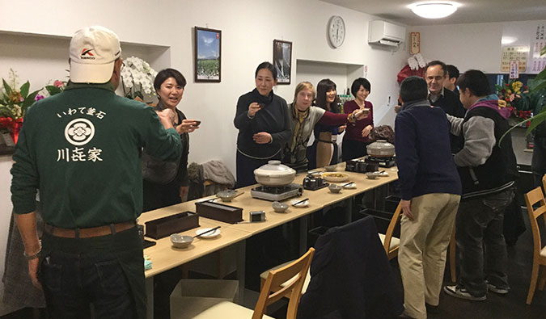
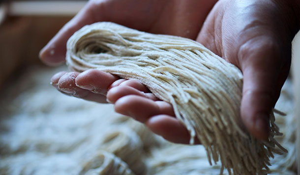

会社名
有限会社 川㐂商事 そば処 川㐂家

川㐂家について
2011年の震災で03年から営業してきた食堂「喜庵」が津波で被災し。食堂は閉店せざるを得なかった。
震災から数年が立った時、グループ会社である株式会社川喜の事業が好転した事も手助けになり、念願だった食堂の再開に踏み切った。
お店は川喜の工場だった場所をリニューアルすることに。
わやま高原に11万平方メートル自家栽培の蕎麦畑を管理している社長の蕎麦屋として蕎麦を直接栽培し、直接お客様に食べさせたいとの思いから蕎麦をメインに再開した。
「 」を信念にお客様をお待ちしています。
 代表取締役社長
川端 学
会社名
有限会社 川㐂商事 そば処 川㐂家
代表者
代表取締役社長 川端 学
本社
〒026-0054
岩手県釜石市野田町三丁目11-8
TEL
(0193)27-5811